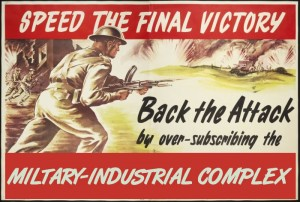

<?xml version="1.0" encoding="UTF-8"?>
<rss version="2.0"
	xmlns:content="http://purl.org/rss/1.0/modules/content/"
	xmlns:wfw="http://wellformedweb.org/CommentAPI/"
	xmlns:dc="http://purl.org/dc/elements/1.1/"
	xmlns:atom="http://www.w3.org/2005/Atom"
	xmlns:sy="http://purl.org/rss/1.0/modules/syndication/"
	xmlns:slash="http://purl.org/rss/1.0/modules/slash/"
	>

<channel>
	<title>Chronosynclastic Infundibulum &#187; pakistan</title>
	<atom:link href="http://www.semanticoverload.com/tag/pakistan/feed/" rel="self" type="application/rss+xml" />
	<link>http://www.semanticoverload.com</link>
	<description>The world through my prisms</description>
	<lastBuildDate>Thu, 07 Apr 2011 17:36:17 +0000</lastBuildDate>
	<language>en-US</language>
	<sy:updatePeriod>hourly</sy:updatePeriod>
	<sy:updateFrequency>1</sy:updateFrequency>
	<generator>http://wordpress.org/?v=3.5</generator>
		<item>
		<title>More on Afridi</title>
		<link>http://www.semanticoverload.com/2011/04/05/more-on-afridi/</link>
		<comments>http://www.semanticoverload.com/2011/04/05/more-on-afridi/#comments</comments>
		<pubDate>Wed, 06 Apr 2011 03:13:41 +0000</pubDate>
		<dc:creator>Semantic Overload</dc:creator>
				<category><![CDATA[debate]]></category>
		<category><![CDATA[politics]]></category>
		<category><![CDATA[sports]]></category>
		<category><![CDATA[26/11]]></category>
		<category><![CDATA[Afridi]]></category>
		<category><![CDATA[controversy]]></category>
		<category><![CDATA[cricket]]></category>
		<category><![CDATA[gambhir]]></category>
		<category><![CDATA[gautam]]></category>
		<category><![CDATA[india]]></category>
		<category><![CDATA[pakistan]]></category>
		<category><![CDATA[terrorism]]></category>

		<guid isPermaLink="false">http://www.semanticoverload.com/?p=826</guid>
		<description><![CDATA[Looks like Afridi&#8217;s comments (similar to the ones I talked about in my previous post) are raising quite a storm in India and elsewhere, especially in the online community. He said something to the effect that Indians do not have as large a heart as Pakistanis and Muslims do. Since the proverbial fit hit the [...]]]></description>
				<content:encoded><![CDATA[<p>Looks like Afridi&#8217;s comments (similar to the ones I talked about in<a title="Afridi’s Turncoat Act" href="../../../2011/04/04/afridis-turncoat-act/index.html"> my previous post</a>) are raising quite a storm in India and elsewhere, especially in the online community. He said something to the effect that Indians do not have as large a heart as Pakistanis and Muslims do. Since the proverbial <a title="TOI article: Muslim scholar slams Afridi's line" href="http://timesofindia.indiatimes.com/city/mumbai/Muslim-scholars-slam-Afridis-line/articleshow/7879040.cms">fit hit the shan</a>, Afridi has gone into damage control mode claiming that<a title="Video: NDTV interview with Afridi" href="http://profit.ndtv.com/video/show/195596"> he was quoted out of context</a>.</p>
<div id="attachment_829" class="wp-caption alignright" style="width: 209px"><a href="../../../wp-content/uploads/2011/04/5285420332_4fc0a23931.jpg"></a><p class="wp-caption-text">Afridi. Image source: http://www.flickr.com/photos/charaka/</p></div>
<p>The fury that came out of the Indian online community either in support of or against Afridi had the usual <a title="Aman Ki Asha" href="http://www.amankiasha.com/">Aman-ki-Asha</a> defense or <a title="Wikipedia article on State Sponsored Terrorism and Pakistan" href="http://en.wikipedia.org/wiki/State-sponsored_terrorism#Pakistan">Pakistan-is-a-terror-supporter</a> attack. I will not comment on either side of the arguments except that I saw many good arguments on both sides. However, I do wish to make a point about &#8220;Pakistan is a terrorist state&#8221; versus &#8220;Pakistanis are terrorist sympathizers&#8221; argument that seems to have conveniently folded itself into the argument associated with Afridi&#8217;s statements.</p>
<p>On one side, while many agree that the political establishment in Pakistan sympathizes with and actively supports terrorist acts against India, they caution that one should not claim that the state&#8217;s support for terrorism is the same as the people&#8217;s support for terrorism much like Muage vs. Zimbabweans. On the other side, there are many who argue that a state establishment cannot function without an approval from the masses (even a tacit approval through silence is sufficient). In the latter camp, <a title="Greatbong's blogpost about Afridi's comments" href="http://greatbong.net/2011/04/05/the-big-hearts/">Greatbong argues</a> that <a title="Salmaan Taseer assassaination" href="http://en.wikipedia.org/wiki/Salmaan_Taseer#Assassin">assassination of moderates like Taseer</a> points to a popular sympathy (albeit a tacit one) for Islamic fundamentalism.</p>
<p>I agree with the sentiment that one should not equate the actions of the political establishment with the people of the state. This statement is easy to defend when talking about the people of the state, but the same arguments do not hold when you are considering individuals. The difference is the similar to how statistical inferences, while applicable to a large dataset, become irrelevant when considering the outcome of a single event. Let me explain. While the American public may not favor massive human rights violations in Iraq and may even be against the war in Iraq, you cannot claim the same to be true of some American individual. I know many Americans who actively support America&#8217;s invasion of Iraq and deposing of Saddam Hussain. I also know many Americans who oppose it.</p>
<p>The American I know who oppose the Iraq war are quick to blame their political establishment and, if pressed, are willing to offer their apologies to Iraqies and an outright admission that they oppose their goverment&#8217;s actions.</p>
<p>Let&#8217;s go back and consider Afridi&#8217;s comments specifically with respect to this argument &#8221;Pakistan is a terrorist state&#8221; versus &#8220;Pakistanis are terrorist sympathizers&#8221;. Reacting to Gautam Gambhir&#8217;s statement that India&#8217;s victory over Pakistan will help soothe the pain over 26/11 Mumbai attacks, Afridi said: &#8220;I think they were very stupid comments by Gautam Gambhir. I was not expecting this from Gautam. This is all politics, what do you know about who carried out the Mumbai attacks?&#8221; [<a href="http://www.indiatoday.intoday.in/site/Story/134319/sports/world-cup-afridi-slams-gambhir-for-2611-remark.html">source</a>]</p>
<p>Despite <a title="ISI's role in 26/11 attacks" href="http://www.lankaenews.com/English/news.php?id=10836">overwhelming</a> <a title="Headly reveals Pak role in 26/11 Mumbai attacks" href="http://ibnlive.in.com/news/david-headley-reveals-paks-role-in-2611-attacks/133350-3.html?from=tn">evidence</a> that <a title="Wikipedia article on attribution of the 26/11 Mumbai attacks" href="http://en.wikipedia.org/wiki/Attribution_of_the_2008_Mumbai_attacks">26/11 attacks received support from Pakistani establishment</a>, Afridi asserts that there is no knowledge of the perpetrators of 26/11. He could have distanced himself from the whole thing by simply saying &#8220;This is just politics.&#8221; and stopping there. But he did not. For some reason he felt compelled to defend the Pakistani establishment. That sounds like Afridi is batting for the Pakistani establishment. So I cannot give Afridi a reprieve on the &#8221;Pakistan is a terrorist state&#8221; versus &#8220;Pakistanis are terrorist sympathizers&#8221; schism.</p>
]]></content:encoded>
			<wfw:commentRss>http://www.semanticoverload.com/2011/04/05/more-on-afridi/feed/</wfw:commentRss>
		<slash:comments>3</slash:comments>
		</item>
		<item>
		<title>Afridi&#8217;s Turncoat Act</title>
		<link>http://www.semanticoverload.com/2011/04/04/afridis-turncoat-act/</link>
		<comments>http://www.semanticoverload.com/2011/04/04/afridis-turncoat-act/#comments</comments>
		<pubDate>Tue, 05 Apr 2011 00:41:50 +0000</pubDate>
		<dc:creator>Semantic Overload</dc:creator>
				<category><![CDATA[sports]]></category>
		<category><![CDATA[video]]></category>
		<category><![CDATA[Afridi]]></category>
		<category><![CDATA[cricket]]></category>
		<category><![CDATA[india]]></category>
		<category><![CDATA[interview]]></category>
		<category><![CDATA[pakistan]]></category>
		<category><![CDATA[turncoat]]></category>

		<guid isPermaLink="false">http://www.semanticoverload.com/?p=817</guid>
		<description><![CDATA[When Pakistan cricket team returned home after their semi-final loss to India, the media mobbed skipper Shahid Afridi and asked him about the loss to India. In response, Afridi got pretty aggressive and asked the media (and I am paraphrasing here) &#8220;Why are you against India? Why the hatred? Our rituals are borrowed from India; [...]]]></description>
				<content:encoded><![CDATA[<p>When Pakistan cricket team returned home after their semi-final loss to India, the media mobbed skipper Shahid Afridi and asked him about the loss to India. In response, Afridi got pretty aggressive and asked the media (and I am paraphrasing here) &#8220;Why are you against India? Why the hatred? Our rituals are borrowed from India; our culture is in large part from there; the movies we watch in our homes are Indian. So why such animosity?&#8221;<br />
Here is the video [the interview is in Urdu]:</p>
<p><span class="youtube">
<object width="425" height="355">
<param name="movie" value="http://www.youtube.com/v/tv749SCqzuU?color1=d6d6d6&amp;color2=f0f0f0&amp;border=0&amp;fs=1&amp;hl=en&amp;autoplay=0&amp;showinfo=0&amp;iv_load_policy=3&amp;showsearch=0&amp;rel=1" />
<param name="allowFullScreen" value="true" />
<embed wmode="opaque" src="http://www.youtube.com/v/tv749SCqzuU?color1=d6d6d6&amp;color2=f0f0f0&amp;border=0&amp;fs=1&amp;hl=en&amp;autoplay=0&amp;showinfo=0&amp;iv_load_policy=3&amp;showsearch=0&amp;rel=1" type="application/x-shockwave-flash" allowfullscreen="true" width="425" height="355"></embed>
<param name="wmode" value="opaque" />
</object>
</span><p><a href="http://www.youtube.com/watch?v=tv749SCqzuU">www.youtube.com/watch?v=tv749SCqzuU</a></p></p>
<p>Afridi&#8217;s response made it to Facebook and other social media sites and was appreciated by many as a mature and responsible response by a de-fact ambassador of Pakistan and cricket.<br />
The very next day, Afridi is interviewed by a reporter from Dawn news and he says this: &#8220;The media in India is very negative. One of the reasons India and Pakistan do not get along well is because of the media there. [...] I tried a lot to reach out to the Indian players, but no matter how hard we try they can never be like us.&#8221;<br />
Here is the video [the interview is in Urdu]:</p>
<p><span class="youtube">
<object width="425" height="355">
<param name="movie" value="http://www.youtube.com/v/HXh8Wk9LkqU?color1=d6d6d6&amp;color2=f0f0f0&amp;border=0&amp;fs=1&amp;hl=en&amp;autoplay=0&amp;showinfo=0&amp;iv_load_policy=3&amp;showsearch=0&amp;rel=1" />
<param name="allowFullScreen" value="true" />
<embed wmode="opaque" src="http://www.youtube.com/v/HXh8Wk9LkqU?color1=d6d6d6&amp;color2=f0f0f0&amp;border=0&amp;fs=1&amp;hl=en&amp;autoplay=0&amp;showinfo=0&amp;iv_load_policy=3&amp;showsearch=0&amp;rel=1" type="application/x-shockwave-flash" allowfullscreen="true" width="425" height="355"></embed>
<param name="wmode" value="opaque" />
</object>
</span><p><a href="http://www.youtube.com/watch?v=HXh8Wk9LkqU">www.youtube.com/watch?v=HXh8Wk9LkqU</a></p></p>
<p>So in 24 hours, Afridi goes from chastising Pakistani media for all the hyperbole and starts blaming Indian media and the Indian team for the less than cordial atmosphere between the two nation.</p>
<p>Wonder what prompted the turncoat act. Any theories?</p>
<p>P.S: Note that Afridi avoids eye contact rather conspicuously in the second video and not the first.</p>
]]></content:encoded>
			<wfw:commentRss>http://www.semanticoverload.com/2011/04/04/afridis-turncoat-act/feed/</wfw:commentRss>
		<slash:comments>0</slash:comments>
		</item>
		<item>
		<title>Military-Industrial Complex as a force for good? Since when?</title>
		<link>http://www.semanticoverload.com/2010/08/02/military-industrial-complex-as-a-force-for-good-since-when/</link>
		<comments>http://www.semanticoverload.com/2010/08/02/military-industrial-complex-as-a-force-for-good-since-when/#comments</comments>
		<pubDate>Mon, 02 Aug 2010 19:35:29 +0000</pubDate>
		<dc:creator>Semantic Overload</dc:creator>
				<category><![CDATA[india]]></category>
		<category><![CDATA[politics]]></category>
		<category><![CDATA[China]]></category>
		<category><![CDATA[DRDO]]></category>
		<category><![CDATA[Eisenhower]]></category>
		<category><![CDATA[MIC]]></category>
		<category><![CDATA[military-industrial complex]]></category>
		<category><![CDATA[pakistan]]></category>
		<category><![CDATA[USA]]></category>

		<guid isPermaLink="false">http://www.semanticoverload.com/?p=535</guid>
		<description><![CDATA[Josy Joseph argues in the Times of India (ToI) article &#8220;Farewell to foreign arms?&#8221; that India would benefit from a Military-Industrial Complex (MIC) as a &#8220;force for good&#8221;. Joseph&#8217;s argument is that our reliance on foreign powers for adequate military fire power is hurting us in two ways: (a) its draining our economy, and (b) [...]]]></description>
				<content:encoded><![CDATA[<div id="attachment_541" class="wp-caption alignleft" style="width: 235px"><a href="http://www.l4dmaps.com/img/poster/mic-military-industrial-complex.jpg"></a><p class="wp-caption-text">source: http://www.l4dmaps.com/details.php?file=3052</p></div>
<p>Josy Joseph argues in the Times of India (ToI) article &#8220;<a title="A farewell to foreign arms?" href="http://timesofindia.indiatimes.com/home/sunday-toi/special-report/Farewell-to-foreign-arms/articleshow/6242138.cms">Farewell to foreign arms?</a>&#8221; that India would benefit from a <a title="Wikisource: Military-Industrial Complex" href="http://www.sourcewatch.org/index.php?title=Military-industrial_complex">Military-Industrial Complex (MIC)</a> as a &#8220;force for good&#8221;. Joseph&#8217;s argument is that our reliance on foreign powers for adequate military fire power is hurting us in two ways: (a) its draining our economy, and (b) it could be our Achilles heel. The proposal is to establish a MIC to enforce self-sufficiency in weapon production.</p>
<p>While the end (self-sufficiency in weapon production) is justifiable, the means (a MIC) is not.  Where do I even begin my arguments! There are so many. Let me try and coalesce them down to a few key ones.<span id="more-535"></span></p>
<p>First, there is Eisenhower who warned the US against the MIC in his famous farwell address where he said, &#8220;In the councils of government, we must guard against the acquisition of unwarranted influence, whether sought or unsought, by the military-industrial complex. The potential for the disastrous rise of misplaced power exists and will persist. We must never let the weight of this combination endanger our liberties or democratic processes. We should take nothing for granted. Only an alert and knowledgeable citizenry can compel the proper meshing of the huge industrial and military machinery of defense with our peaceful methods and goals, so that security and liberty may prosper together.&#8221;</p>
<p>We all know <a href="http://www.consortiumnews.com/2010/070610c.html">how well that warning was heeded to</a>! The US has since become a country that has <a href="http://en.wikipedia.org/wiki/Timeline_of_United_States_military_operations#1950-1959">perpetuated conflict in various parts of the world since world war II</a>, sometimes even to the detriment of its own citizens and soldiers, to ensure that the <a href="http://consortiumnews.com/2010/070510a.html">output of the MIC is sufficiently consumed</a> and adequate profits are generated.</p>
<p>In the ToI article, Joseph argues that the MIC can be used as a force for good, but doesn&#8217;t really elaborate on how to ensure that we do not end up with a USA style MIC.</p>
<p>Of course, there are one who argue that the MIC build by the US is something we should strive for.  Let me assure you that its a bad idea!</p>
<p>For starts, the MIC is not working well for the people of USA to begin with; it is <a title="Article: The Military-Industrial Complex is Ruining the Economy " href="http://www.georgewashington2.blogspot.com/2010/01/military-industrial-compex-is-ruining.html">ruining their economy</a>. US can afford its MIC because it does not have enemies in its backyard, and any weapons it sells is very unlikely to find its way back to the US mainland. But India shares its border with two enemies (Pakistan and <a title="India digs under the top of the world to match China" href="http://www.nytimes.com/2010/08/01/world/asia/01pass.html">China</a>), and considering the volatility in Pakistan, it will be very difficult to ensure that any arms that India exports will not find its way into Pakistan or China only to be used to against India.</p>
<p>How about India not export its arms? Well, then to keep the MIC active, and hence profitable, India will be forced to engage in a perpetual armed conflict (be it an all out war or low intensity combats) to avoid the dismantling of its MIC by natural economic forces of demand and supply. So any way you look at it, an MIC will only hasten a war with India.</p>
<p>Of course, all my arguments are underpinned on the assumption that the MIC is a private entity whose primary goal is profit. What if India establishes a public-sector based MIC. Unfortunately, <a href="http://timesofindia.indiatimes.com/home/sunday-toi/special-report/Farewell-to-foreign-arms/articleshow/6242138.cms">Joseph&#8217;s own assessment of India&#8217;s public sector undertaking DRDO</a> makes a disastrous prediction for the prospects of such an enterprise. Furthermore, India&#8217;s abysmal ranking as the <a href="http://www.business-standard.com/india/news/india-ranked-84th-in-corruption-index/376796/">76th most corrupt nation</a> is not lending any confidence to a public-sector based MIC actually producing sufficient weapons in quanity and quality to defend the country in the first place!</p>
<p>So yeah, I have to strongly disagree to the notion of a MIC in India (or anywhere for that matter). Nothing good has come off of MIC so far, and nothing ever will. It is a systemically flawed concept of national security. MIC like any other institution only serves its own self-preservation, and that inevitably involves a perpetual state of war.</p>
<div id="attachment_546" class="wp-caption aligncenter" style="width: 310px"><a href="http://3.bp.blogspot.com/_dgcaLG1UvU4/TCiX6MMUPNI/AAAAAAAAHXA/FSVxf_UhR88/s1600/victory.jpg"></a><p class="wp-caption-text">source: http://chimpplanet.blogspot.com</p></div>
]]></content:encoded>
			<wfw:commentRss>http://www.semanticoverload.com/2010/08/02/military-industrial-complex-as-a-force-for-good-since-when/feed/</wfw:commentRss>
		<slash:comments>0</slash:comments>
		</item>
		<item>
		<title>Pakistani office mate</title>
		<link>http://www.semanticoverload.com/2008/09/05/pakistani-officemate/</link>
		<comments>http://www.semanticoverload.com/2008/09/05/pakistani-officemate/#comments</comments>
		<pubDate>Fri, 05 Sep 2008 20:09:42 +0000</pubDate>
		<dc:creator>Semantic Overload</dc:creator>
				<category><![CDATA[humor]]></category>
		<category><![CDATA[funny]]></category>
		<category><![CDATA[humour]]></category>
		<category><![CDATA[india]]></category>
		<category><![CDATA[Kashmir]]></category>
		<category><![CDATA[office]]></category>
		<category><![CDATA[pakistan]]></category>
		<category><![CDATA[PhD]]></category>

		<guid isPermaLink="false">http://www.semanticoverload.com/?p=205</guid>
		<description><![CDATA[So I have a new office mate, and she is Pakistani. Sometimes things just fall in place so beautifully that you cant resist but make up a story. This would be one of those times. We both have the same academic adviser, and she&#8217;s American. I also have a Russian in my PhD committee. You [...]]]></description>
				<content:encoded><![CDATA[<p><a href="../../../wp-content/uploads/2008/09/india_pakistan_flag.jpg"></a>So I have a new office mate, and she is Pakistani. Sometimes things just fall in place so beautifully that you cant resist but make up a story. This would be one of those times. We both have the same academic adviser, and she&#8217;s American. I also have a Russian in my PhD committee. You see where this is going? :-)<br />
As luck would have it, we have three desks in the office. One for me, one for my office mate, and a third unassigned desk. Now this got my mind racing. This could be the perfect setting for a mini south Asian international politics! Ok, stay with me on this one.<br />
What if I drew a line across the office and said, &#8220;Hey this side is mine, and is India. The other side is yours and is Pakistan.&#8221; Of course, each of our desks would be in our &#8216;country&#8217;, but there is the matter of the third desk. No that&#8217;s got to be Kashmir! Draw a line across the third desk and say, &#8220;This side is Pakistan controlled Kashmir, and my side is India controlled Kashmir.&#8221; Wait, this gets better.<br />
Now that we have established our sovereign regions, we should have the right to defend it. If my office mate steps into &#8216;India&#8217; without my permission, then it shall be considered as aggression, and act of war, and I will have the right to defend my &#8216;nation&#8217;. I will do so by attacking her with spitballs (kinda like <a href="http://www.funny-games.biz/spitball-warrior.html">this game</a>).</p>
<p>My office mate does have the right to complain, and most likely the issue will be taken up with our adviser, the American, and of course she&#8217;ll side with my office mate (Since they are both members of NATO, and war on terror on what not). Since Pakistan got the F-16s from the US, my office mate will get better equipment for research. Now its my turn to go crying to someone else. And who would that be? The Russian in my committee of course! Russia and India go way back! He&#8217;ll back me up by giving me some of this equipment for my research.</p>
<p>This is almost too perfect :-) I think we are going to have loads of fun this year. Oh, and there&#8217;s research too&#8230; eh&#8230; kinda. ;-)</p>
]]></content:encoded>
			<wfw:commentRss>http://www.semanticoverload.com/2008/09/05/pakistani-officemate/feed/</wfw:commentRss>
		<slash:comments>0</slash:comments>
		</item>
		<item>
		<title>Emergency in Pakistan</title>
		<link>http://www.semanticoverload.com/2007/11/03/emergency-in-pakistan/</link>
		<comments>http://www.semanticoverload.com/2007/11/03/emergency-in-pakistan/#comments</comments>
		<pubDate>Sat, 03 Nov 2007 21:03:14 +0000</pubDate>
		<dc:creator>Semantic Overload</dc:creator>
				<category><![CDATA[debate]]></category>
		<category><![CDATA[politics]]></category>
		<category><![CDATA[democracy]]></category>
		<category><![CDATA[emergency]]></category>
		<category><![CDATA[Musharraf]]></category>
		<category><![CDATA[pakistan]]></category>
		<category><![CDATA[US]]></category>

		<guid isPermaLink="false">http://semanticoverload.gaddarinc.com/?p=131</guid>
		<description><![CDATA[Musharraf declares emergency in Pakistan, replacing the chief justice before a crucial Supreme Court ruling on his future as president. The best reaction that US could give was that it was &#8216;disappointed&#8217; (that is was &#8216;deeply disturbed&#8217; and &#8216;urges&#8217; Pakistan to return to democracy). Disappointed!? Is that it? Whatever happened to all the rhetoric about [...]]]></description>
				<content:encoded><![CDATA[<p><a href="http://ap.google.com/article/ALeqM5jIE0IUn4WIiaMBpjG8SI_6H5RXzgD8SMCHC04">Musharraf declares emergency in Pakistan</a>, replacing the chief justice before a crucial Supreme Court ruling on his future as president.</p>
<p>The best reaction that US could give was that <a href="http://in.reuters.com/article/topNews/idINIndia-30315520071103">it was &#8216;disappointed&#8217;</a> (that is was &#8216;deeply disturbed&#8217; and <a href="http://ap.google.com/article/ALeqM5h1aBshjF1CnfJ4noaEXA_Vb8dm-gD8SMANS04">&#8216;urges&#8217; Pakistan to return to democracy</a>). Disappointed!? Is that it? Whatever happened to all the rhetoric about being pro-democracy and restoring democracy in the world one botched fiasco (translation: Iraq) at a time? But wait, isn&#8217;t Pakistan (translation: Musharraf) an ally in the American war <em>of</em> terror? So I guess anything that Musharraf does is pro-democracy, given that Bush and Mushrraf are bosom buddies and all. I wouldn&#8217;t be surprised if Washington tows Musharraf&#8217;s line on this one, <em>viz.</em> that <a href="http://in.reuters.com/article/topNews/idINIndia-30316220071103?sp=true">he did it for democracy</a>!</p>
]]></content:encoded>
			<wfw:commentRss>http://www.semanticoverload.com/2007/11/03/emergency-in-pakistan/feed/</wfw:commentRss>
		<slash:comments>0</slash:comments>
		</item>
	</channel>
</rss>
